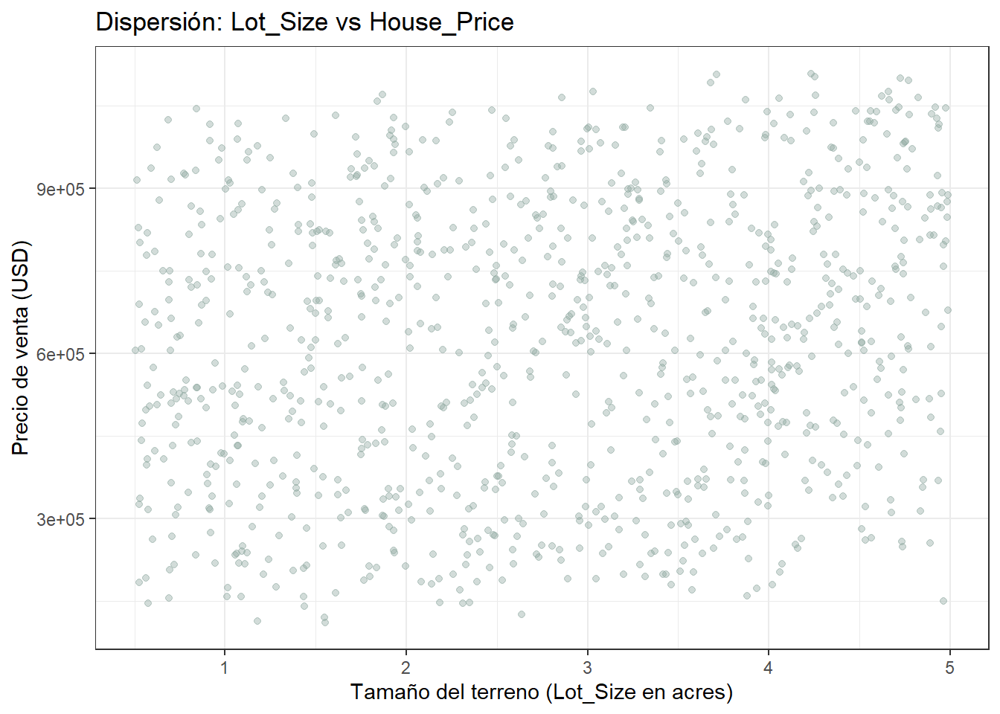
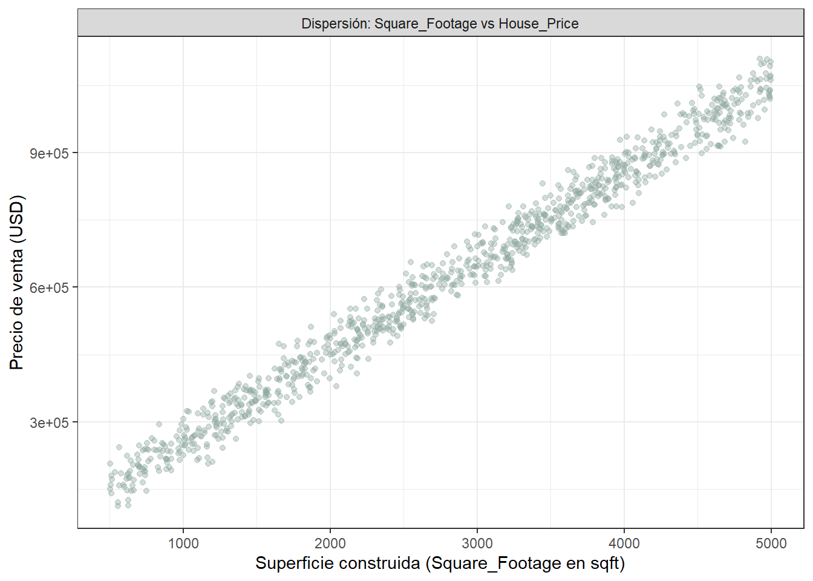
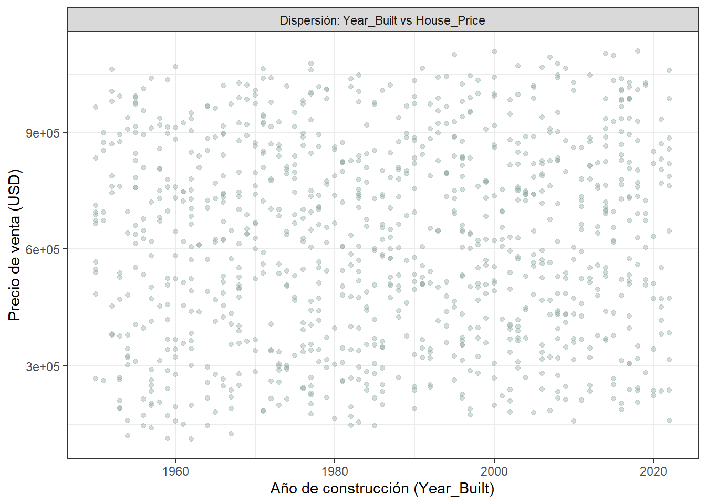
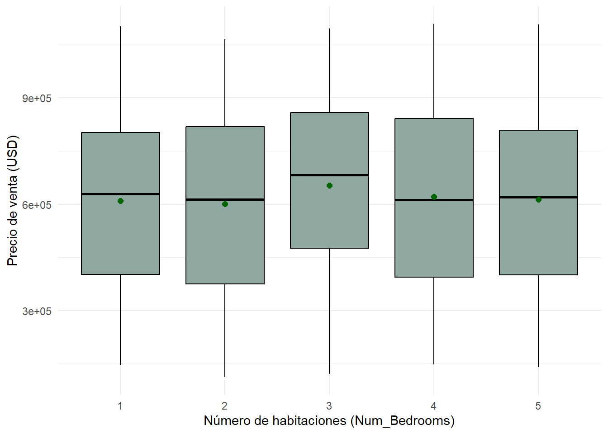
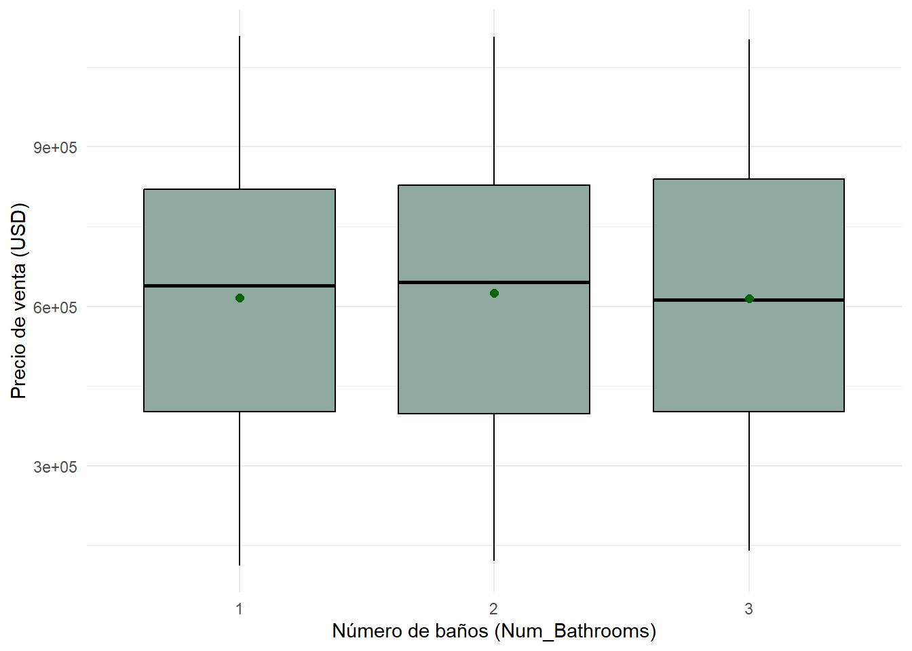
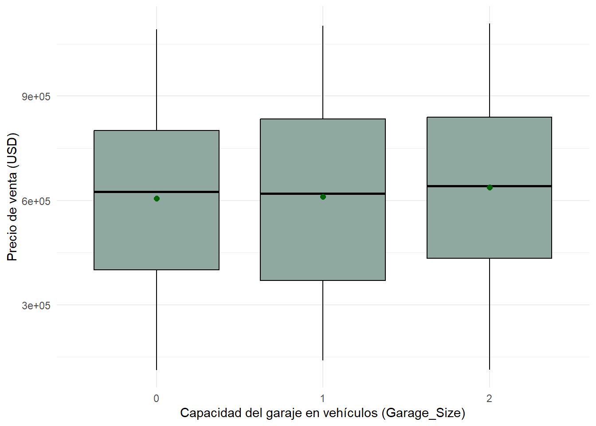
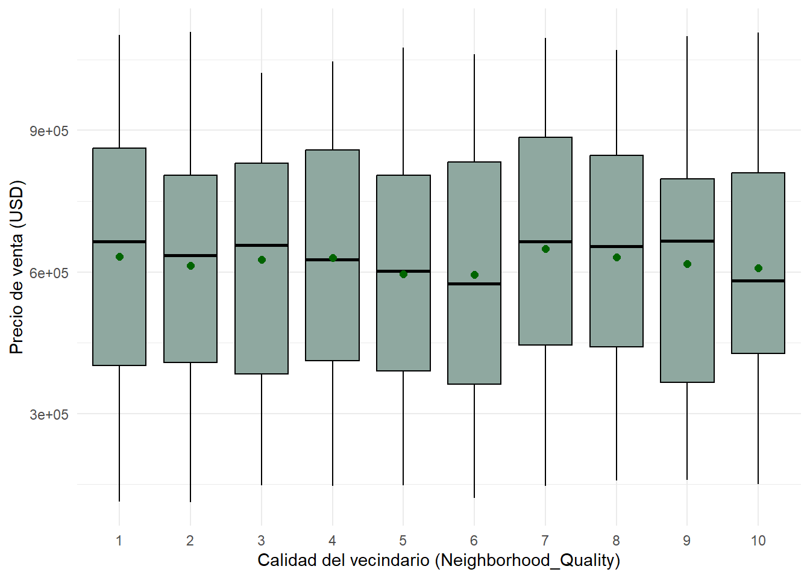

Chapter 5 Análisis Exploratorio Bivariado
Tras haber caracterizado el comportamiento univariado de las variables, corresponde examinar cómo se relaciona cada uno de los predictores con el precio de venta (House_Price). Este análisis permite identificar patrones de asociación, evaluar la dirección y fuerza de las relaciones, así como detectar posibles comportamientos no lineales.
5.1 Variables continuas vs. House_Price
5.1.1 Lot_Size vs House_Price
df %>%
ggplot(aes(x = Lot_Size, y = House_Price)) +
geom_point(alpha = 0.4, color = "#8fa8a0") +
labs(title = "Dispersión: Lot_Size vs House_Price",
x = "Tamaño del terreno (Lot_Size en acres)", y = "Precio de venta (USD)") +
theme_bw()
La nube de datos, sin ninguna forma reconocible, ocupa todo el rectángulo del gráfico. No hay un ensanchamiento ni un estrechamiento visible de la nube a medida que avanza el eje horizontal ni una inclinación perceptible de la masa de puntos hacia arriba o hacia la derecha. Es decir, para cualquier tamaño del terreno, desde los más pequeños (cerca de 0.5 acres) hasta los más grandes (cerca de 5 acres), el precio de venta se reparte de forma silmilar entre los USD 110.000 y USD 1.1 millones.
##
## Pearson's product-moment correlation
##
## data: df$Lot_Size and df$House_Price
## t = 5.1341, df = 998, p-value = 3.408e-07
## alternative hypothesis: true correlation is not equal to 0
## 95 percent confidence interval:
## 0.09940715 0.22021486
## sample estimates:
## cor
## 0.16041175.1.2 Square_Footage vs House_Price
df %>%
ggplot(aes(x = Square_Footage, y = House_Price)) +
geom_point(alpha = 0.4, color = '#8fa8a0') +
labs(x = 'Superficie construida (Square_Footage en sqft)', y = 'Precio de venta (USD)') +
theme_bw() +
facet_grid(. ~ 'Dispersión: Square_Footage vs House_Price')
La relación, con los puntos formando una banda diagonal angosta y consistente que recorre desde la esquina inferior izquierda (viviendas pequeñas y baratas) hasta la esquina superior derecha (viviendas grandes y costosas), grafican una relación evidente al ojo.##
## Pearson's product-moment correlation
##
## data: df$Square_Footage and df$House_Price
## t = 237.39, df = 998, p-value < 2.2e-16
## alternative hypothesis: true correlation is not equal to 0
## 95 percent confidence interval:
## 0.9901121 0.9922777
## sample estimates:
## cor
## 0.99126155.1.3 Year_Built vs House_Price
df %>%
ggplot(aes(x = Year_Built, y = House_Price)) +
geom_point(alpha = 0.4, color = '#8fa8a0') +
labs(x = 'Año de construcción (Year_Built)', y = 'Precio de venta (USD)') +
theme_bw() +
facet_grid(. ~ 'Dispersión: Year_Built vs House_Price')
La nube de puntos cubre todo el rango vertical de precios de forma pareja para cualquier año de construcción. En esta misma línea, el patrón es indistinguible de una dispersión aleaatoria respecto al eje horizontal. No se identifican precios sistemáticamente más alto que otros entre las viviendas de 2020 y las de 1950.##
## Pearson's product-moment correlation
##
## data: df$Year_Built and df$House_Price
## t = 1.6439, df = 998, p-value = 0.1005
## alternative hypothesis: true correlation is not equal to 0
## 95 percent confidence interval:
## -0.01005812 0.11359449
## sample estimates:
## cor
## 0.051967365.2 Variables discretas y categóricas vs. House_Price
5.2.1 Num_Bedrooms vs House_Price
df %>%
group_by(Num_Bedrooms) %>%
summarise(
n = n(),
media = mean(House_Price, na.rm = TRUE),
mediana = median(House_Price, na.rm = TRUE),
sd = sd(House_Price, na.rm = TRUE),
RIC = IQR(House_Price, na.rm = TRUE),
Q1 = quantile(House_Price, 0.25, na.rm = TRUE),
Q3 = quantile(House_Price, 0.75, na.rm = TRUE),
minimo = min(House_Price, na.rm = TRUE),
maximo = max(House_Price, na.rm = TRUE),
asimetria = skewness(House_Price, na.rm = TRUE),
curtosis = kurtosis(House_Price, na.rm = TRUE))## # A tibble: 5 × 12
## Num_Bedrooms n media mediana sd RIC Q1 Q3 minimo maximo asimetria curtosis
## <dbl> <int> <dbl> <dbl> <dbl> <dbl> <dbl> <dbl> <dbl> <dbl> <dbl> <dbl>
## 1 1 201 610105. 628611. 245539. 400384. 402330. 802714. 146020. 1102534. -0.128 1.98
## 2 2 215 601325. 613606. 263879. 443319. 375341. 818660. 111627. 1064775. -0.00942 1.82
## 3 3 182 653491. 681989. 248147. 382247. 475563. 857810. 120796. 1096158. -0.239 2.03
## 4 4 197 621163. 611558. 257071. 447764. 394409. 842172. 147602. 1108237. 0.0470 1.81
## 5 5 205 612881. 619516. 251144. 408599. 400307. 808906. 140538. 1107045. -0.0137 1.98df %>%
ggplot(aes(x = factor(Num_Bedrooms), y = House_Price)) +
geom_boxplot(fill = "#8fa8a0", color = "black", outlier.color = "darkred") +
stat_summary(fun = mean, geom = 'point', shape = 20, size = 3, color = "darkgreen") +
labs(x = "Número de habitaciones (Num_Bedrooms)", y = "Precio de venta (USD)") +
theme_minimal()
###Num_Bathrooms vs House_Price
df %>%
group_by(Num_Bathrooms) %>%
summarise(
n = n(),
media = mean(House_Price, na.rm = TRUE),
mediana = median(House_Price, na.rm = TRUE),
sd = sd(House_Price, na.rm = TRUE),
RIC = IQR(House_Price, na.rm = TRUE),
Q1 = quantile(House_Price, 0.25, na.rm = TRUE),
Q3 = quantile(House_Price, 0.75, na.rm = TRUE),
minimo = min(House_Price, na.rm = TRUE),
maximo = max(House_Price, na.rm = TRUE),
asimetria = skewness(House_Price, na.rm = TRUE),
curtosis = kurtosis(House_Price, na.rm = TRUE))## # A tibble: 3 × 12
## Num_Bathrooms n media mediana sd RIC Q1 Q3 minimo maximo asimetria curtosis
## <dbl> <int> <dbl> <dbl> <dbl> <dbl> <dbl> <dbl> <dbl> <dbl> <dbl> <dbl>
## 1 1 350 616475. 638762. 252316. 418894. 401725. 820620. 111627. 1108237. -0.122 1.92
## 2 2 327 625152. 645375. 253935. 430293. 397535. 827828. 120796. 1107045. -0.0493 1.88
## 3 3 323 615078. 611558. 255213. 436625. 402272. 838897. 140538. 1102534. -0.0177 1.92df %>%
ggplot(aes(x = factor(Num_Bathrooms), y = House_Price)) +
geom_boxplot(fill = "#8fa8a0", color = "black", outlier.color = "darkred") +
stat_summary(fun = mean, geom = 'point', shape = 20, size = 3, color = "darkgreen") +
labs(x = "Número de baños (Num_Bathrooms)", y = "Precio de venta (USD)") +
theme_minimal()
5.2.2 Garage_Size vs House_Price
df %>%
group_by(Garage_Size) %>%
summarise(
n = n(),
media = mean(House_Price, na.rm = TRUE),
mediana = median(House_Price, na.rm = TRUE),
sd = sd(House_Price, na.rm = TRUE),
RIC = IQR(House_Price, na.rm = TRUE),
Q1 = quantile(House_Price, 0.25, na.rm = TRUE),
Q3 = quantile(House_Price, 0.75, na.rm = TRUE),
minimo = min(House_Price, na.rm = TRUE),
maximo = max(House_Price, na.rm = TRUE),
asimetria = skewness(House_Price, na.rm = TRUE),
curtosis = kurtosis(House_Price, na.rm = TRUE)
)## # A tibble: 3 × 12
## Garage_Size n media mediana sd RIC Q1 Q3 minimo maximo asimetria curtosis
## <dbl> <int> <dbl> <dbl> <dbl> <dbl> <dbl> <dbl> <dbl> <dbl> <dbl> <dbl>
## 1 0 321 606032. 624412. 248183. 400621. 400585. 801206. 111627. 1092027. -0.0960 1.96
## 2 1 336 611343. 619462. 256592. 464137. 370089. 834226. 140538. 1102534. -0.0166 1.82
## 3 2 343 638232. 641014. 255153. 405383. 433915. 839298. 113577. 1108237. -0.0910 1.94df %>%
ggplot(aes(x = factor(Garage_Size), y = House_Price)) +
geom_boxplot(fill = "#8fa8a0", color = "black", outlier.color = "darkred") +
stat_summary(fun = mean, geom = 'point', shape = 20, size = 3, color = "darkgreen") +
labs(x = "Capacidad del garaje en vehículos (Garage_Size)", y = "Precio de venta (USD)") +
theme_minimal()
5.2.3 Neighborhood_Quality vs. House_Price
df %>%
group_by(Neighborhood_Quality) %>%
summarise(
n = n(),
media = mean(House_Price, na.rm = TRUE),
mediana = median(House_Price, na.rm = TRUE),
sd = sd(House_Price, na.rm = TRUE),
RIC = IQR(House_Price, na.rm = TRUE),
Q1 = quantile(House_Price, 0.25, na.rm = TRUE),
Q3 = quantile(House_Price, 0.75, na.rm = TRUE),
minimo = min(House_Price, na.rm = TRUE),
maximo = max(House_Price, na.rm = TRUE),
asimetria = skewness(House_Price, na.rm = TRUE),
curtosis = kurtosis(House_Price, na.rm = TRUE)
)## # A tibble: 10 × 12
## Neighborhood_Quality n media mediana sd RIC Q1 Q3 minimo maximo asimetria curtosis
## <dbl> <int> <dbl> <dbl> <dbl> <dbl> <dbl> <dbl> <dbl> <dbl> <dbl> <dbl>
## 1 1 91 632969. 663905. 268239. 460056. 401776. 861832. 1.14e5 1.10e6 -0.153 1.80
## 2 2 105 613066. 635097. 251391. 396437. 408014. 804450. 1.12e5 1.11e6 -0.0428 2.07
## 3 3 85 625681. 656223. 246547. 446096. 384461. 830557. 1.48e5 1.02e6 -0.178 1.95
## 4 4 99 629867. 626454. 260256. 446932. 411523. 858455. 1.46e5 1.05e6 -0.0627 1.83
## 5 5 109 595240. 602549. 246143. 414788. 389645. 804434. 1.47e5 1.08e6 0.0574 1.94
## 6 6 101 593804. 574913. 265933. 469667. 362720. 832386. 1.21e5 1.06e6 0.132 1.84
## 7 7 102 648856. 664200. 264277. 440449. 444561. 885011. 1.46e5 1.10e6 -0.176 1.85
## 8 8 97 630746. 654467. 238596. 405620. 440726. 846346. 1.59e5 1.07e6 -0.187 1.99
## 9 9 88 617873. 666352. 255896. 430857. 366417. 797274. 1.59e5 1.10e6 -0.157 1.90
## 10 10 123 607767. 581948. 245054. 382109. 427187. 809296. 1.50e5 1.11e6 0.0139 2.03df %>%
ggplot(aes(x = factor(Neighborhood_Quality), y = House_Price)) +
geom_boxplot(fill = "#8fa8a0", color = "black", outlier.color = "darkred") +
stat_summary(fun = mean, geom = 'point', shape = 20, size = 3, color = "darkgreen") +
labs(x = "Calidad del vecindario (Neighborhood_Quality)", y = "Precio de venta (USD)") +
theme_minimal()